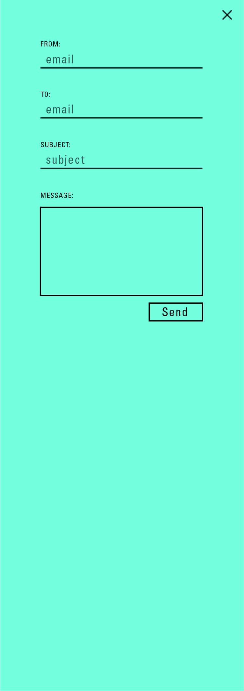

The Reporter
This project was about taking Rochester Institute of Technologies "The Reporter" website and create a more user friendly and visually intriguing design.
Current Design:
Goal:
To create an experience catered to people ages 16-30. This range captures the teens to the young adults including those looking at this school as a potential choice, those looking for updates, and alumni wanting to check in on their old school.
Research:
I found that my target audience have a couple main things they looked for in a news site. The first being social media integration in order to share with their friends or followers what they were up to or interested in. The next is interaction and overall things to engage them further in the site. So web animations, an interesting layout, and properly displayed articles all are important to consider when designing for this audience.
Approach:
I went about this assignment by first deciding on ways to integrate social media and sharing into the design. This was achieved by creating a user friendly emailing form, and having any external media, like facebook, take you directly to that site with a filled out post ready for submission. The next thing I did was create a more interesting layout. I added a unified color scheme and white space to keep the users eyes moving and intrigued.
Final Compositions:
